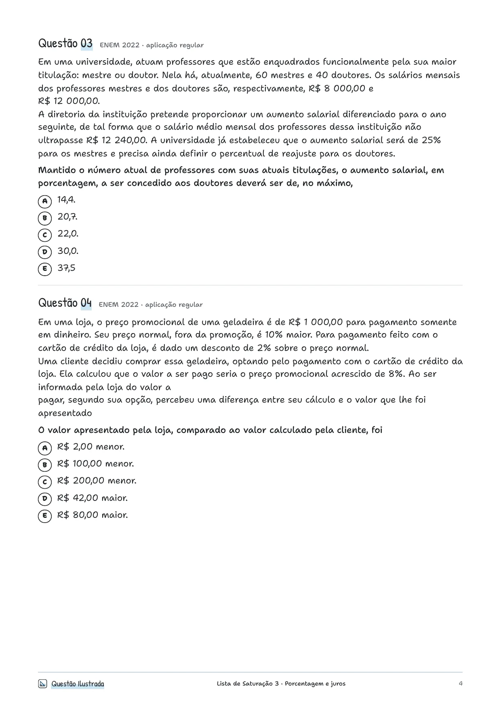
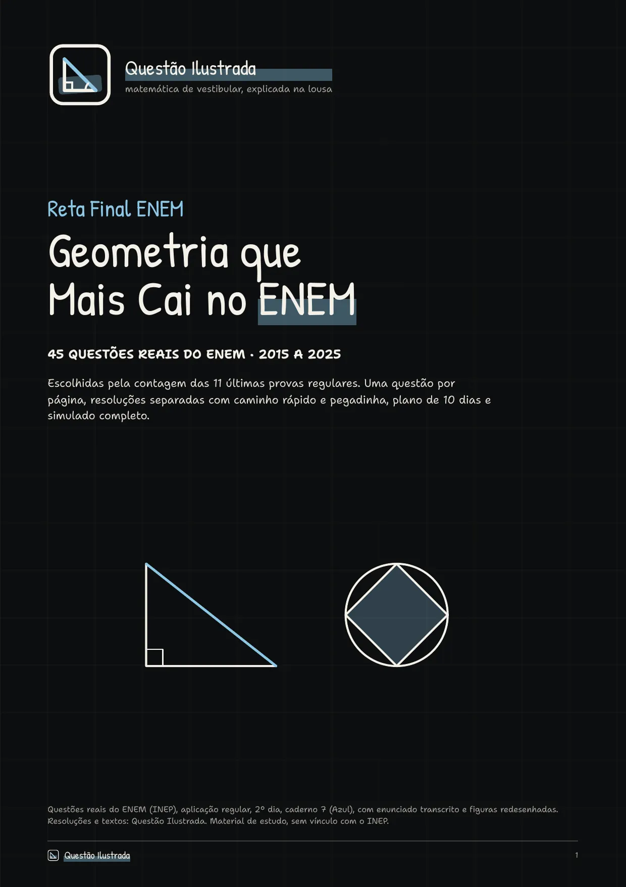
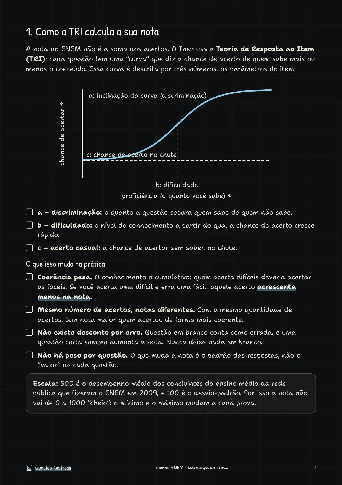
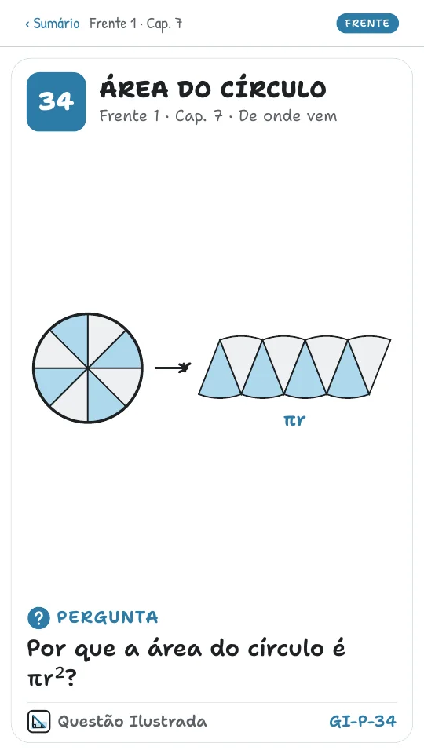
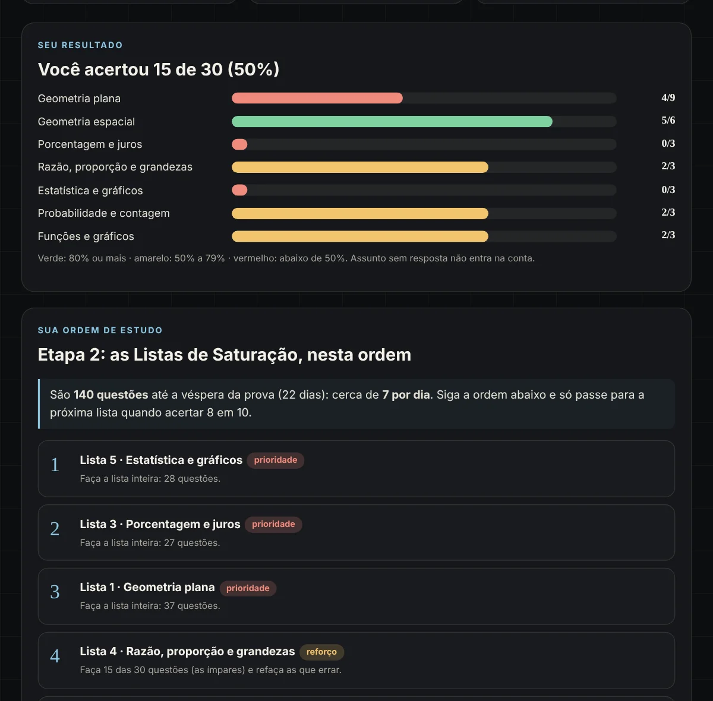
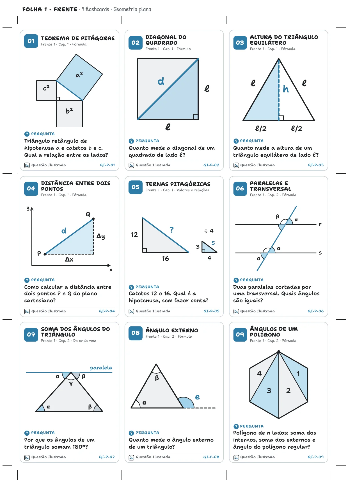
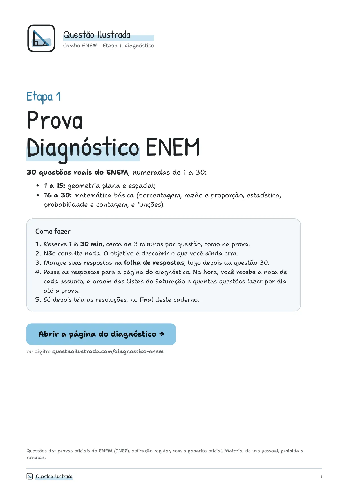
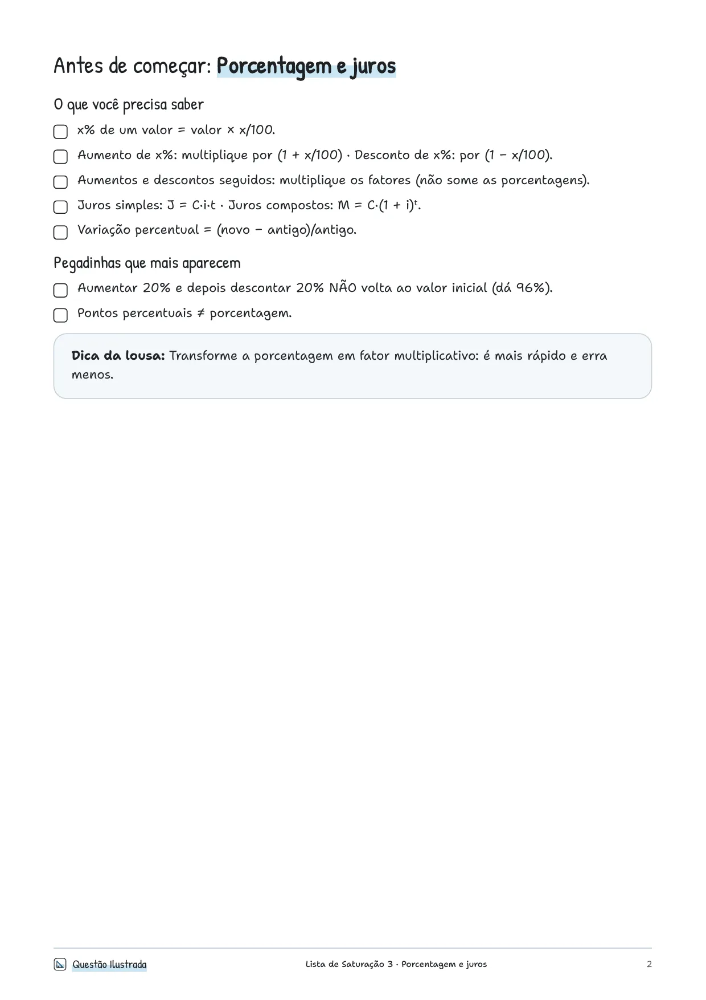
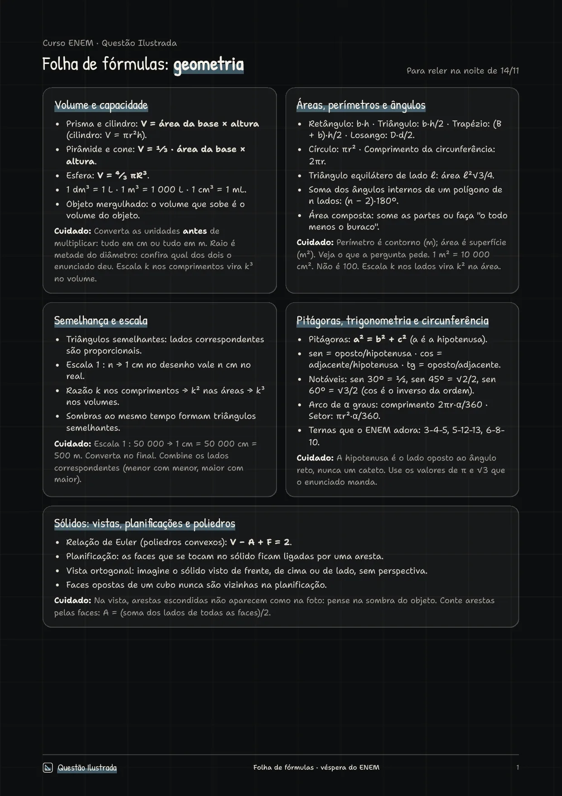
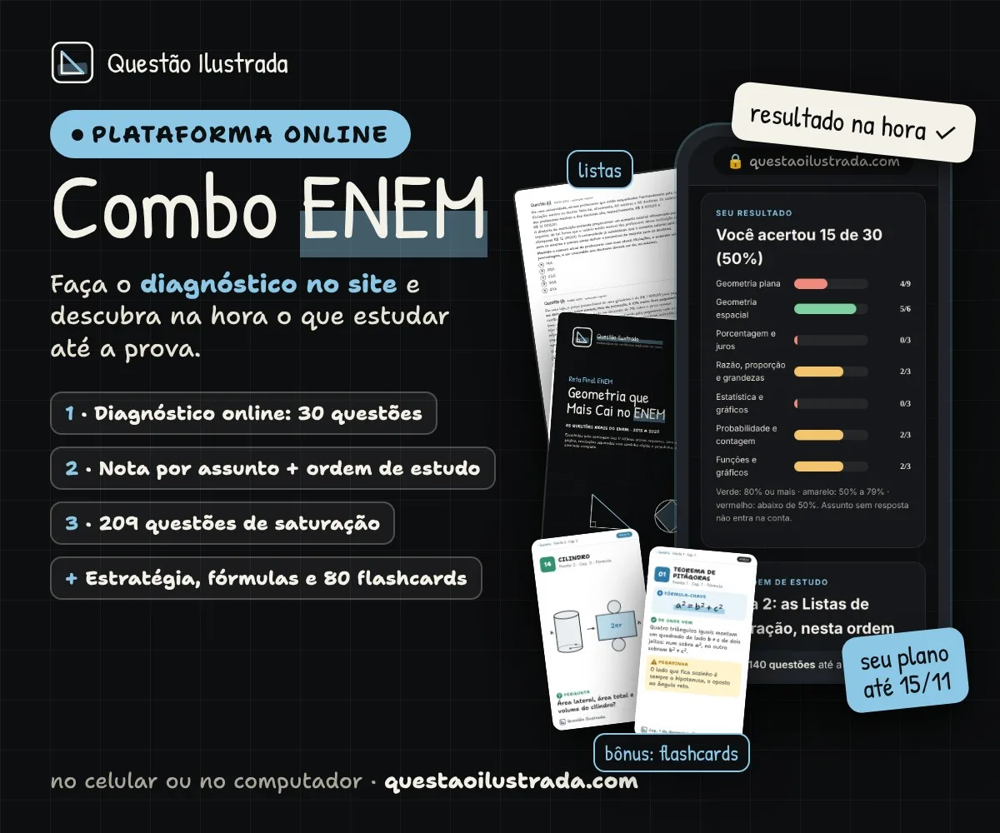

Descubra o que você erra. Treine até fixar.
Faça a Prova Diagnóstico de 30 questões e veja, na hora, quanto você acerta em cada assunto e onde está perdendo ponto. A página monta a ordem do que estudar e quantas questões fazer por dia. Depois, listas de saturação com questões reais do ENEM, até acertar.
- Geometria espacialprioridade
- Porcentagem e jurosprioridade
- Probabilidadeprioridade
- Geometria planareforço

7 Listas de Saturação209 questões
Simulado de geometria45 questões
Estratégia + fórmulasreta final
80 Flashcardsbônusquestões no diagnóstico, cerca de 1h30
questões reais do ENEM nas listas de saturação
listas, uma para cada assunto
flashcards de geometria de bônus
Faltam poucos dias.
Não dá para estudar tudo.
Na reta final, o que rende é saber exatamente onde você perde ponto e treinar aquilo, do jeito que cai, até não errar mais.
✕ "Não sei por onde começar"
O diagnóstico mostra o que você erra e monta a ordem das listas para você.
✕ "Estudo e erro o mesmo tipo"
Ver uma questão resolvida não fixa. Fazer 20, 30 do mesmo assunto, fixa.
✕ "Esqueço a fórmula na hora"
Folha de fórmulas para a véspera e 80 flashcards de bônus para revisar todo dia.
Três etapas até a prova.
Você não precisa decidir o que estudar. O curso decide com você, a partir do que você erra.
Diagnóstico
Só 30 questões: 15 de geometria e 15 de matemática básica. Marque as respostas na nossa página e veja a nota de cada assunto.
Saturação
O diagnóstico monta a ordem das listas e diz quantas questões fazer por dia. Cada lista tem só questões reais do ENEM daquele assunto: errou porcentagem, faz a lista de porcentagem até fixar.
Reta final
Na véspera, a folha de fórmulas e o guia de estratégia: como a TRI calcula a nota, o tempo de cada questão e como chutar melhor.

Exemplo do resultado do diagnóstico. Suas respostas ficam só no seu aparelho.
O que mais cai de geometria no ENEM
Lemos as 495 questões de Matemática das 11 últimas provas regulares: 128 eram de geometria, mais de 1 em cada 4. O simulado do diagnóstico segue essa proporção: 11 de volume, 9 de áreas, 5 de escala, 5 de Pitágoras e trigonometria, 5 de circunferência, 5 de vistas, 3 de poliedros e 2 de ângulos.
Contagem da Questão Ilustrada, lendo cada questão das provas oficiais do INEP. Ficaram de fora conversões de unidade sem figura, gráficos de funções trigonométricas, geometria analítica e questões anuladas. Outros levantamentos, com critérios diferentes, chegam a 20% a 25%.
Diagnóstico, saturação e reta final.
Tudo em PDF, na área de membros, liberado logo depois do pagamento.
Etapa 1 · Diagnóstico
A Prova Diagnóstico: 30 questões num PDF só (15 de geometria e 15 de matemática básica), com folha de respostas e resoluções, e a página que monta o seu diagnóstico. O simulado completo, de 45 questões, fica para treinar depois.
Etapa 2 · 7 Listas de Saturação
Uma lista por assunto, só com questões reais do ENEM, gabarito oficial e a página "Antes de começar" com as fórmulas e as pegadinhas: geometria plana (37), geometria espacial (31), porcentagem e juros, razão e proporção, estatística e gráficos, probabilidade e contagem, funções.
Etapa 3 · Reta final
Estratégia de prova no ENEM (TRI, tempo e chute, com o checklist do dia 15/11) e a folha de fórmulas de geometria e matemática básica para reler na véspera.
80 Flashcards de Geometria
Plana (38), espacial (26) e trigonometria (16). Pergunta na frente; no verso, a fórmula-chave, de onde ela vem e a pegadinha. No celular, impresso ou no Anki.
A fórmula e de onde ela vem.
Cards reais do material. Na frente, a pergunta com a figura. No verso, a fórmula-chave, de onde ela vem e a pegadinha. Toque em um card para virar.
3 jeitos de usar os mesmos 80 cards
PDF vertical
Um card por tela, frente e depois verso, com sumário por capítulo. Para revisar no ônibus ou na fila.

A4, 9 por folha
Imprima frente e verso, recorte e leve no bolso. O fundo branco gasta pouca tinta.
Baralho pronto
As 80 cartas para importar no Anki, que traz cada card de volta na hora de revisar. Com guia de importação passo a passo.
Saber a matéria é metade. A outra é não desperdiçar ponto.
Um guia curto para ler na véspera: como a nota é calculada e o que isso muda na hora de decidir o que fazer, o que pular e como chutar.
Como a TRI calcula a nota
Por que errar uma fácil custa mais que errar uma difícil, e por que nunca deixar nada em branco.
Tempo e ordem de ataque
Um plano de tempo para o 2º dia, os temas que valem garantir primeiro e os sinais de que é hora de pular.
Eliminar antes de chutar
Ordem de grandeza, unidade, estimativa e casos extremos. E o checklist do dia 15/11.
Do primeiro dia à prova
Diagnóstico
30 questões. Veja o que errou.
Listas na ordem
As questões do dia, até acertar 8 em 10.
10 min de flashcards
Fórmulas na ponta da língua.
Reta final
Folha de fórmulas e estratégia.
Abra e veja como é por dentro.
Páginas reais do material, do jeito que você vai receber. Abrem numa nova aba.

Prova Diagnóstico
A capa com o passo a passo, 3 das 30 questões e a folha de respostas.
Abrir PDF ↗
Lista de Saturação
A lista de porcentagem e juros: capa, "Antes de começar" e as primeiras questões.
Abrir PDF ↗
Reta final
Uma página da folha de fórmulas e uma do guia de estratégia (TRI).
Abrir PDF ↗Simulado de geometria
A capa e 2 das 45 questões, com as figuras redesenhadas.
Abrir PDF ↗Folheie antes de comprar.
Páginas reais do simulado, das listas de saturação, da estratégia e dos flashcards. Toque em uma página para ampliar.
Tudo em PDF, na hora.
Logo depois do pagamento, você baixa os arquivos na área de membros da Kiwify. Estude no celular ou imprima a versão clara.
- Simulado de geometria72 páginas · escuro e claro
- Prova Diagnóstico30 questões + folha de respostas + resoluções
- 7 Listas de Saturação209 questões · para imprimir
- Folha de fórmulas2 páginas · escuro e claro
- Flashcards para imprimirA4, 9 por folha, frente e verso
- Flashcards para celularPDF vertical, com sumário
- Baralho do Anki80 cartas + guia de importação
- Estratégia de prova no ENEM4 páginas · versão escura e clara

Descubra o que você erra e treine até fixar, até a prova
- 1. Diagnóstico de 30 questões + páginao que estudar
- 2. 7 Listas de Saturação (209 questões)treinar até fixar
- 3. Estratégia de prova + folha de fórmulasa reta final
- Bônus: 80 Flashcards de Geometriaa revisão diária
dias
Domingo, 15/11, às 13h30. Comece hoje pelo diagnóstico.
Perguntas frequentes
As questões são do ENEM mesmo?
Sim. Todas são de provas regulares do ENEM, com o gabarito oficial do INEP. O simulado tem 45 questões de 2015 a 2025 com figuras redesenhadas; as listas de saturação trazem questões de 2009 a 2025, com as figuras das provas originais. Cada questão foi resolvida de novo por um revisor independente.
O que é uma lista de saturação?
É uma lista com muitas questões de um único assunto, do jeito que cai no ENEM. Você faz até o erro sumir: errou porcentagem, faz a lista de porcentagem; errou geometria plana, faz a de geometria plana. Cada lista começa com as fórmulas e as pegadinhas do assunto e termina com o gabarito e o quadro "Meu controle".
Como funciona o diagnóstico?
Você faz 15 questões de geometria e 15 de matemática básica (cerca de 1h30), marca as respostas na nossa página e recebe a nota de cada assunto, a ordem das listas e quantas questões fazer por dia até a prova. As respostas ficam salvas só no seu aparelho.
Preciso ter a Geometria Ilustrada?
Não. O combo funciona sozinho. As resoluções e os flashcards indicam o capítulo da apostila só para quem quiser se aprofundar.
Já tenho a Geometria Ilustrada. Vale a pena?
Sim. Nenhuma questão do simulado nem das listas se repete com a apostila, e o curso cobre também a matemática básica. Os flashcards vêm de bônus: se você já os levou junto com a apostila, são os mesmos.
Começo atrasado. Ainda dá tempo?
Dá. O diagnóstico calcula quantas questões fazer por dia com os dias que faltam. Comece pelas listas marcadas como prioridade.
Como funcionam os flashcards?
São 80 cartas com a pergunta na frente e a resposta atrás: fórmula-chave, de onde ela vem e a pegadinha. Imprima em A4 (9 por folha, frente e verso), use o PDF no celular (com sumário por capítulo) ou importe no Anki, com o guia passo a passo.
O que tem no guia de estratégia?
Como a TRI calcula a nota e por que as fáceis pesam, um plano de tempo para o 2º dia, os temas que valem garantir primeiro, os sinais de que vale pular, como eliminar alternativas antes de chutar e o checklist do dia da prova. Nenhum método garante nota, mas a estratégia evita desperdiçar pontos.
Como recebo?
Logo após o pagamento você entra na área de membros da Kiwify e baixa os PDFs.
Posso ver antes de comprar?
Pode. Abra as amostras em PDF nesta página: a Prova Diagnóstico, uma Lista de Saturação, o simulado e a reta final. Ou folheie as páginas na galeria.
Pronto para descobrir o que você erra?
- Diagnóstico com 30 questões
- 7 listas de saturação, 209 questões do ENEM
- Estratégia de prova e folha de fórmulas
- Bônus: 80 flashcards de geometria